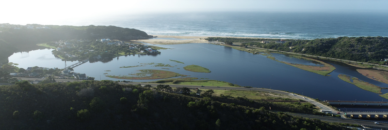

![]()
Overall 30% estuaries are under high or very high cumulative pressure from flow reduction, pollution, overfishing, biological invasive and artificial breaching.
Overall multiple interventions are required to avoid further decline in health. These include protection of freshwater inflow to estuaries and the sea, restoration of water quality, reduction in fishing effort and avoidance of mining, infrastructure development and crops in the estuarine functional zone.

Pressure overviews
Estuarine ecosystems and species face ever increasing pressures from range and intensity of human activities which continue to expand and diversity along the coast. The 2025 pressure evaluation shows that a third of freshwater flow no longer reaches the coast (22% of systems severely impacted). Wastewater discharges amount to about 655 000 m3/d (32% of estuaries under severe pollution pressure), with harmful algal blooms (HABs) now recorded in 18% of estuaries in response to declining water quality. Over 22% of estuaries are also subjected to severe habitat modification.
Estuaries, especially in KwaZulu-Natal and Wild Coast, are under extreme pressure from illegal gillnetting, with systems under severe pressure increasing from 15% to 21% to 28% between 2011, 2018 and 2025 (75%, 78% and 85% of area), significantly compromising the multiple benefits derived from estuaries. The mouths of only 15% of South African estuary are artificially manipulated, but these estuaries represent more than 60% of the total estuarine habitat in the country. Alien, extralimital or translocated fish occur in 25 % of South Africa’s estuaries. There are 22 species recorded to date with one to nine per system. A third of estuaries have invasive terrestrial plants occurring within the estuarine functional zone whilst aquatic invasive species heavily infest 8% of estuaries.
Understading key estuary pressure
A brief summary of pressures is provided here with a description of each pressure, detailed the relative intensity of each pressure, summarised patterns in the extent and intensity of pressures, summarise biodiversity impacts of each pressure, and noting mitigation measures (1,2).
Key pressure categories include (2):
Freshwater flow modification impacts estuarine productivity and ecological functioning, affecting estuarine circulation and retention. It also impacts water chemistry (e.g., salinity, dissolved oxygen), sediment processes, and land-sea connectivity. In extreme cases, it can lead to type changes, causing closure of estuaries previously categorised as permanently open (3). Associated biological impacts include degradation of habitats such as intertidal mudflats, salt marsh, and mangroves. Changes in connectivity can impact life-cycle requirements of migrating species, and genetic exchange between estuaries and adjacent marine environment.
Land-use and development refer to land-use such as agriculture, as well as hard infrastructure development such as harbours and ports. Direct effects include loss of abiotic and biotic habitat, changes in circulation patterns, disruption of erosion/depositional cycles, modified tidal regimes, premature mouth closure, water clarity, and declining primary productivity. Ultimately, habitat changes have cascading impacts on biota, affecting population size/biomass, community composition, and possible local extinctions. Habitat loss also reduces carrying capacity of estuaries, especially for higher trophic level species.
Inlet manipulations are driven by the need to enhance land-sea connectivity. Artificial breaching is the most prevalent activity in this category and isimplemented to alleviate back-flooding of poorly planned low-lying developments or agricultural land when the mouth closes (4;3). Reduced freshwater flow often results in increased inlet closure, higher sand bar levels, and increased flooding of surrounding environs (Stein et al., 2021). Closed conditions are associated with nuisance algae or macrophyte blooms in nutrient-enriched systems, with premature artificial breaching promoted as a mitigation measure. Premature breaching can alter seasonality in land-sea connectivity, while breaching at too low levels reduces scouring of accumulated sediment and organic matter, resulting in constrained tidal flows and shorter open periods. Inlet manipulation changes key hydrodynamics and biogeochemical processes with cascading effects on primary productivity, species composition, and recruitment of larval fish and invertebrates (4). Inlet manipulation may also induce estuary type changes, e.g., changing temporarily open systems to permanently open systems (van Niekerk et al., 2020).
Pollution, specifically nutrient enrichment, results in excessive primary production and associated secondary impacts such as hypoxia (low oxgen) and loss of associated ecosystem services (1). Eutrophication results in loss of submerged aquatic vegetation, oxygen depletion, harmful algae blooms, imbalanced food webs, lower biodiversity, altered biogeochemical cycling, and fish kills. Pollution can change an estuary from a macrophyte-dominated to a phytoplankton- or macroalgae-dominated system. Toxic substances, such as trace metals and persistent organic pollutants (e.g., herbicides and pesticides), also pose significant ecological and human health risks.
Estuaries function as nurseries and provide vital habitat for commercially important estuary-associated marine fish and invertebrates species (5). Fishing impact population size, biomass, sex-ratios, size/age distribution, community composition, trophic structure, and reproductive capacity. Depletion-driven declines in effective population size may also drive hybridization. Vulnerable life-history characteristics, e.g., estuary-dependence, ‘natal homing’ and predictable aggregations are amplified by anthropogenic pressures such as fishing, pollution, and flow modification, ultimately leading to recruitment failure or even extirpation.
Biological invasions by invasive alien species pose an ever-increasing threat to estuaries causing ecological and economic damage. Alien species can alter abiotic and biotic habitats, change sediment/water pathways, nutrient/biogeochemical cycling, impact community structure and functions by modifying spatial and food chain resources, with direct or indirect effects on indigenous species. Economic concerns include reduced food sources, burrowing activities destabilising embankments, clogging of desalination/cooling water plants, and predation of commercially important species. Habitat degradation reduces overall estuary ecosystem resilience to alien invasive species such as invasive North American cordgrass Spartina alterniflora and Asian mollusc Tarebia granifera (6).
Fresh water flow modification
More than a third of freshwater flows to estuaries is now abstracted (36 900 to 24 800 x 106 m3/a). The most significant reduction occurs in the Cool Temperate region, mainly due to reduce flow to the Orange Estuary, which drains more than 60% of the surface area of South Africa. Followed by the Warm Temperate region, while losses in the wetter Subtropical region are less. Arid predominantly closed systems are most severely impacted by flow modification. These estuary types have a high sensitivity to flow modification, as they are in hot, arid environments subjected to high evaporation rates. Estuarine types supported by relatively large catchments, such as Large fluvially dominated, Predominantly open, and Large temporarily closed systems, also experience high to very high flow modification pressures.
Activities that contribute significantly to flow modification include: run-of-river abstraction, dam development, alien vegetation infestation, return flows (e.g., wastewater and agriculture), groundwater abstraction, transfer schemes, hydroelectric schemes, and increased runoff from hardened catchment surfaces (e.g., urban development) (2). Of these, run-of-river freshwater abstraction, dams and weirs, and alien vegetation infestation are mainly responsible for decreasing inflow.
*MAP OF FLOW MODIFICATION
Pollution
Except for the Tropical region, substantial areas across all biogeographic regions experience severe pollution pressures, with the Cool Temperate and Subtropical regions the most effected. Most severely affected functional groups are the Large fluvially dominated systems, Predominantly open and Estuarine bays. Only Estuarine lagoons and Small fluvially dominated systems still experience low pollution pressure.
Wastewater discharges to estuaries totalling 655 000 m3/day. These are mostly from municipal WWTWs, with the highest volumes disposed of in the urban centres of Cape Town (Cool Temperate region) and Durban (Subtropical region). The only significant industrial discharge are from fish processing is in the Cool Temperate region. Diffuse urban runoff (stormwater) is a major source of pollution in rapidly growing urban areas, where informal settlements are often not connected to sewage reticulation systems. Municipalities often do not have resources or skills to repair or upgrade deteriorating infrastructure. As a result, WWTWs are often overloaded or malfunctioning causing spillage. Agricultural return flows are also cause marked water quality deterioration in estuaries (e.g., Sundays, Gamtoos estuaries). Solid waste (e.g., litter and single-use plastics) is an emerging concern in especially from urban areas and informal settlements. Most of these activities are on an increasing trajectory.
Key activities contribute to pollution pressure include wastewater discharges (municipal and industrial), urban stormwater runoff, agricultural return flow, solid waste (e.g., litter and plastics), and shipping activities (e.g., oil spills). Of these wastewater discharges, urban runoff, and agricultural return flows are the most significant. Rapid coastal development generates greater demand for WWTW facilities (1,2). Although most coastal municipalities have sewage reticulation systems that comply with permitted effluent concentration standards, effluent volumes are often higher than the assimilative capacity of receiving estuaries (1).
Fishing
Estuaries under sever fishing pressure have in crease from 15% to 21% to 28% between 2011, 2018 and 2025 (75% to78% to 85% area) severely comprising the multiple benefits derive from estuaries. Availability of cheap gillnets online (e.g. Temo, Takelot, Shein) have led to exponential increase in estuary fishing pressure. Estuaries, especially in KZN and Wild Coast, under severe pressure from illegal gillnetting. Fishing pressure is largely focussed on the larger types. For example, 100% of Estuarine lagoons and Estuarine bays are under severe pressure followed by Predominantly open, Estuarine lakes, and Large fluvially dominated systems. Most smaller estuary types, experience low to no fishing pressure.
Gillnetting is a indiscriminate fishing method that catches juvenile fish, macro invertebrates(crabs and prawns), birds, turtles and terrapins, water monitors and crocodiles. In response authorities launched DFFE Gillnet Reporting App hosted by OCIMS to monitor illegal catches and established a well co-ordinate compliance network in KZN. An example of success, is that in 2025 80% of nets are retrieved before they catch anything and for every 39 fish caught per illegal net retrieved 21 is released alive. Catches peaked in 2023/24.Compliance initiatives needs to be supported by community education and awareness, increase customs control (to stop imports), and collaboration with on-line retailers to foster self-regulation. The retailer Macro is example of self-regulation as they removed nets form stock once the company became aware of the cascading impacts on estuarine and coastal ecosystems.
*MAP OF FISHING PRESSURE
Land-use change and infrastructure development
The Warm and Cool Temperate regions are most affected, followed by the Subtropical region. Overall, agriculture is responsible for the most land cover transformation, while urban development contributes to a lesser degree. Land-use and development pressures are high to very high across most estuarine types, with Large fluvially dominated, Arid predominantly closed, Predominantly open, Large temporarily closed; Estuarine bays, and Estuarine lakes, and Small temporarily closed systems all under severe pressure. Only Estuarine lagoons and Small fluvially dominated systems experience low pressure, as these are well represented in protected areas.
Land-use and infrastructure development pressures are associated with activities in the EFZ: urban infrastructure (housing, resorts), transport infrastructure (roads, crossings, and culverts), riparian infrastructure (fences, bank stabilisation and low-lying developments), agriculture (crops, grazing), in-stream infrastructure (jetties and launch sites), forestry, mining, port, harbour and marina infrastructure, raw material harvesting for building (reeds, sedges and mangroves) and saltworks.
Urban development, agriculture, and transport infrastructure are responsible for most impacts, and to a lesser extent riparian and instream infrastructure and mining. Agriculture in the Cool and Warm Temperate regions mainly comprise croplands and grazing, while industrial-scale sugarcane farming dominates the Subtropical region. Burning reeds to improve grazing is a common practice in most regions. Road and railway bridges across estuaries impact sediment processes and the meandering nature of estuary inlets. Although the full extent of transport infrastructure could not be quantified, it is prevalent in all biogeographic regions. The Subtropical region is most affected by poorly planned road and railway infrastructure crossing 48 of 50 estuaries along a 150 km stretch in this region (Begg, 1978; van Niekerk et al., 2013). Commercial ports are located in five estuaries (Cool Temperate (1), Warm Temperate (2), Subtropical (2)), while fishing/yacht harbours and marinas occur in seven estuaries (Cool Temperate (3), Warm Temperate (2), Subtropical regions (2)).
Although mining activities may have a relatively small footprint, the marked increase in mining (and associated irreversible destruction of estuarine habitat) is a growing concern. Mining activities in the Cool and Warm Temperate regions comprise diamond, heavy minerals, and sand mining, and affect 3% and 1% of extent, respectively. Heavy mineral and sand mining are the dominant mining activities in the Subtropical region, with the latter having increased markedly in the past decade, with 71 sand mining operations located within 19 estuaries (affecting 358 ha of estuarine habitat) (GeoTerraImage, 2015; ORI unpublished data). Mining is an intense pressure, with long-term direct and indirect impacts on species and ecosystems. Its direct footprint involves clearing of natural habitat which is captured in land cover change. However, the indirect impacts of mining relating to water abstraction and contamination are not explicitly reflected in these datasets.
Other activities associated with land-use and development, include estuarine vegetation harvested (e.g., reeds, sedges, and mangroves) for housing, the construction of cattle enclosures and fish traps in rural areas. Salt works are confined to a few systems in the more arid parts of the Cool (3) and Warm (2) Temperate regions.
Most land-use and development activities, and their associated impact on estuaries, are on an increasing trajectory. Although commercial port infrastructure is considered stable and limited to only a few estuaries, small fishing and yacht harbours, as well as marina developments, are set to increase under a greater ‘blue economy’ development push.
Mouth manipulations
Mouth manipulations are aimed at increasing land-sea connectivity and refers to artificial breaching, stabilisation, or canalisation, and diversion of mouths (2). Due to inappropriate coastal development, estuary mouths are manipulated to prevent property damage and/or ensure access. Artificial breaching to prevent back-flooding under closed mouth conditions is the most common activity. A small number of mouths are stabilised for navigation, while inlet diversion and/or stabilisation occur in urban areas.
Approximately 15% of estuaries are artificially manipulated, but disproportionally represent more than 60% of extent. While it occurs in all biogeographic regions, it is most often associated with urban centres of Cape Town, Mossel Bay, Port Elizabeth, and Durban. Estuarine lakes are most at risk from mouth manipulation, with most lakes under pressure, followed by Large fluvially dominated, and Large temporarily closed.
In South Africa, mouth manipulation stems from a policy gap where boundaries of properties are still determined by the ‘high water mark’ when an estuary is open, not accounting for back-flooding during closed conditions which serve as critical habitat. Consequently, inappropriate low-lying developments (i.e., inundated under natural breaching levels) are being protected at the cost of natural estuarine processes. Inlet manipulation is on an increasing trajectory. Further, there isa tendency to artificially breach systems well below natural breaching levels, causing increased sedimentation, reduced tidal flows, premature closures, and subsequent increase in long-term flood risk.
*MAP OF Artificial breaching
Alien invasive plants
A third of estuaries have invasive terrestrial plants occurring within estuary functional zone, with 18 (6%) of these systems considered highly invaded. Aquatic invasive species have been recorded in 23 estuaries (8%). These are conservative estimates and are likely much more widespread, especially along the Warm Temperate and Subtropical regions. Alien invasive plants are most prevalent in Large fluvially dominated systems, followed by Predominantly Open and Large temporarily closed estuaries.
Terrestrial invasive species are introduced as garden plants, agricultural crops, or plantation escapees, while aquatic invasives are introduced through ornamental fish trade and garden water features.
Aquatic invasive plants result in a loss of ecosystem services, e.g., decreasing species diversity, forming homogenous habitats, and disrupting aquatic food webs. In total, 70 invasive plant species have been recoded in estuaries. Invasive Acacia species, particularly Rooikrans Acacia cyclops, and Eucalyptus trees were abundant along the Cool and Warm Temperate regions, originally introduced for dune reclamation, while Eucalyptus trees were likely planted for shade. Kikuyu grass Pennisetum clandestinum is also prevalent. A greater diversity of invasive alien plant species occurs along the Subtropical region. Dominant tree species include Brazilian pepper tree Schinus terebinthifolius Raddi, Casuarina equisetifolia, and Sesbania punicea. Urbanised estuaries along this region are highly disturbed and often the riparian vegetation consists only of invasive alien plants such as Spanish reed Arundo donax L., S. terebinthifolius, S. punicea and peanut butter bush Senna didymobotrya.
Disturbed catchments result in a similar invasive aquatic plant composition downstream. Despite biological control programmes, the water hyacinth Pontederia crassipes, remains the worst aquatic weed in South Africa. The species thrive in eutrophic conditions displacing endangered seagrass (e.g., Zostera capensis). When water hyacinth begins to invade the water surface, evaporation rates increase, stream flow decreases, and nutrient cycles become altered. Considering the effects of other IAPs, the fruits of S. terebinthifolius have inhibitory effects on other plants preventing growth surrounding these trees (Donnelly et al., 2008) and Lantana camara also produces allelopathic chemicals that inhibit plant growth and are poisonous when ingested, as is castor oil bush Ricinis communis (Verdien et al., 2012; www.invasives.org.za). Most of the activities listed above are on an increasing trajectory.
*MAP OF AIP
Alien or extralimital fish
About 35% of estuarine extent are under severe pressure from alien or extralimital fish invasion, mostly in Temperate regions. About 76% and 65% of Warm and Cool Temperate regions respectively, are subjected to severe levels. Less than 60% of area remains unaffected by alien or extralimital fish invasion, mostly in the Tropical region. Severe pressures are most prevalent in Predominantly open, Estuarine bays, Large temporarily closed; Large fluvially dominated, Large Temporarily closed and Estuarine lake types.
Settlement of alien and invasive species are a function of the degree of exposure to vectors, e.g., international shipping lanes and ports, aquaculture activities, aquarium trade, and fishing activities. Four key pathways include introduction for food security and sport fishing (e.g., trout fly fishing), release of ornamental fish (pet trade) and aquaculture. Apart from facilitating the import and establishment of AIS, marine and freshwater aquacultures have the potential to, directly and indirectly, impact wild populations through genetic, pathogenic, and parasitic contamination, as well as through overexploitation of brood-stock or indigenous fry and larvae for ranching purposes (2). There are 22 non-native and/or translocated fish species confirmed in 74 (out of 290) estuaries , with degraded estuaries found to be more vulnerable to colonisation than unimpacted systems. The Cool and Warm Temperate regions bear the brunt of introduced species, with the highest occurrence (7 – 9 species) recorded in the Permanently Open estuaries of these regions. Very low numbers of introduced species have been recorded in the Subtropical region, and none have been confirmed in the Tropical region.
*MAP OF ALIEN FISH

Approach
To estimate degree of pressure associated with flow modification, land-use and development, inlet manipulation, and pollution, ratings of related indicators in South Africa’s Estuarine Health Index (EHI) were applied (Turpie et al., 2012). The EHI considers both abiotic (hydrology, hydrodynamics and mouth condition, water chemistry, physical habitat) and biotic (microalgae, macrophytes, invertebrates, fish, and birds) indicators.
Estuarine health is rated as similarity to natural (rated as 100) with pressure ratings correspond to: Low = >75% similar to natural (Categories A - B), Medium = 75 - 60 % (Category C), High = 60 – 40 % (Category D) and Very high = < 40% (Categories E - F).
For flow modification, the hydrological indicator, changes in low flow (60% of indicator rating) and floods (40% of indicator rating), or percentage reduction in mean annual runoff from natural, were used. For land-use and development, changes in physical habitat indicator were used to estimate degree of pressure.
The degree of pressure associated with inlet manipulation was derived from the hydrodynamic indicator, specifically similarity in inlet status. For pollution, a sub-indicator of water quality (scoring similarity in dissolved oxygen, turbidity, nutrients and toxic substances) was applied.
The degree of exploitation of living resources (largely focused on fishing), was derived from a combination of the fish indicator rating, moderated by the nature and magnitude of fishing effort (e.g., number of fishers, traps, gillnets versus fishing rods and handlines); catch composition; and size/age distributions of fish in sample data sets. ‘Very high’ pressure was associated with gillnetting or fish traps. ‘High’ and ‘Medium’ indicated relative levels of recreational and/or subsistence exploitation. ‘Low’ indicated little fishing pressure, however, all estuaries reflect some impact of adjacent beaches and nearshore over-fishing. A few systems where no fish are found (e.g., hypersaline estuaries) were rated as ‘None’.
To assess the degree of pressure from alien invasive plants, data from various national databases were used and categorised into aquatic and terrestrial plants. Their presence was recorded across different reaches (i.e., lower, middle, and upper estuary), while the degree of pressure was estimated on a three-tier scale relative to percentage coverage of EFZ area: Low = alien coverage <5%; Medium = alien coverage 5-15% and High = alien coverage >15%. Data on microalgal and macroalgal blooms were also assessed using similar method.
To evaluate pressure from alien or extralimital (translocated) fish species-level information was used from2. In addition, unpublished freshwater fish species data and field observations were considered (2). A species list per estuary was compiled and fish grouped into to (1) egg and larvae eaters (Bluegill sunfish Lepomis macrochirus, Mosquito fish Gambusia affinis, Guppy Poecilia reticulata), (2) habitat altering species (Carp Cyprinus carpio, Grass carp Ctenopharyngodon idella) and (3) predatory species (Smallmouth bass Micropterus dolomieu, Spotted bass Micropterus punctulatus, Largemouth bass Micropterus salmoides and Sharptooth catfish Clarias gariepinus). Pressure rating for alien or extralimital fish were derived from the number and type of fish species present in individual estuaries, being Low = 1-2 species, Medium = 3-4 species, High = 5-6 species or 1-2 predatory species or Sharptooth catfish Clarias gariepinus present (if translocated/ extralimital) or Very High = >7 species or 3- 4 predatory species.
Technical documentation
Code repositories
Key publications
Niekerk, L. van, S. Taljaard, S. J. Lamberth, J. B. Adams, S. P. Weerts,and C. F. MacKay. 2022. “Disaggregation and Assessment of estuarine pressures at the country-level to better inform management and resource protection the South African experience.” African Journal of Aquatic Science, April. https://www.tandfonline.com/doi/abs/10.2989/16085914.2022.2041388.
Adams, J. B. B., S. Taljaard, L. van Niekerk, and D. A. Lemley. 2020.“Nutrient Enrichment as a threat to the ecological resilience and health of South African microtidal estuaries.” African Journal of Aquatic Science 45 (1-2): 23–40. https://doi.org/10.2989/16085914.2019.1677212.
Recommended citation
Van Niekerk, L., Taljaard, S., Adams, J.B., Lamberth, S.J., Mackay, F.C., Weerts, S.P., Lemley, D.A., James, N.C., & Lakane, C.P. 2025. Pressures: Estuarine realm. National Biodiversity Assessment 2025. South African National Biodiversity Institute. http://nba.sanbi.org.za/.